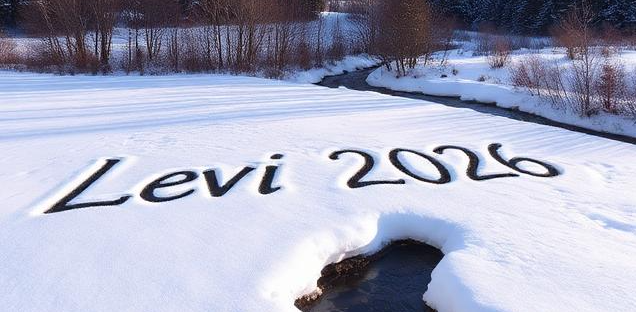

Lapland Scientific Retreat 2026

AI-generated image
Levi, Finland, 9-13 March 2026
This event will bring together experts working on various aspects of data assimilation, uncertainty quantification, and inverse problems.
Programme
The event will be held on 9-13 March 2026 and it consists of a series of talks covering topics including Data Assimilation, Space Physics, and Uncertainty Quantification and Partial Differential Equations
Organizers
This event is organized by Vesa Kaarnioja and Angelica Castillo. Contact person: vesa.kaarnioja@lut.fi
tba